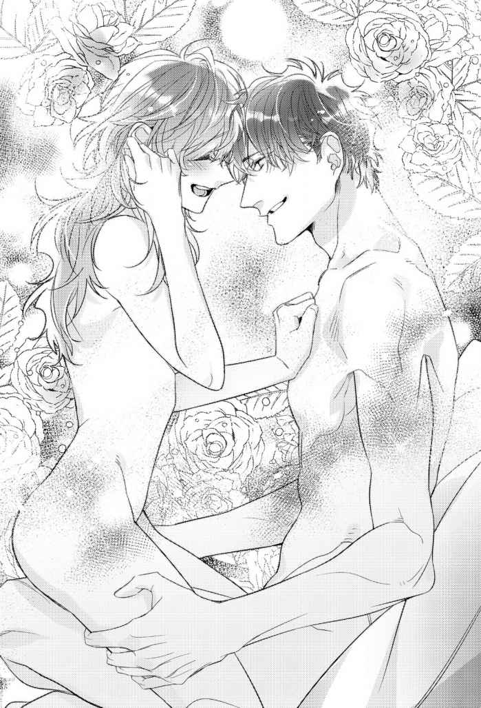

| アフターパンドラ 義兄に捧げる秘めやかな初恋【6】 (チュールキス文庫) | |
| 夜原月見 | |
| 株式会社ジュリアンパブリッシング (2019) | |

この作品はフィクションです。
実際の人物・団体・事件などに一切関係ありません。
真白が倒れた翌日、夕方のことである。
「遅れてごめんね。ちょっと待ってて、着替えてくるから」
病院の最寄り駅近くにあるカフェに着くなり、朝子は手洗いに立った。
――大丈夫そうだな。
制服姿の小さな背を窓際の席から見送りながら、十夜は安堵の息を吐く。
過呼吸発作を起こして、まだ一日足らずである。互いの学校帰りにこの店で待ち合わせ、一緒に真白の見舞いに行く予定だったのだが、朝子の体調次第では病院には寄らず、このまま帰宅しようと考えていた。
朝子の過呼吸は、一時的に精神不安定になったことが原因だろう。普段しっかりした彼女でも、まだ高校生なのだ。ショックを受けているのでは、と胸が騒いだ昨夜、早めに帰宅してみたら案の定、朝子が倒れていたというわけだった。
『昨日のこと、お母さんには内緒にしておいて欲しいの』
今朝、待ち合わせを決める時、朝子はそう言って十夜を拝むように手を合わせてきた。
わかった、と即答したのは、朝子の優しさが理解できたからだ。
見舞い用にわざわざ私服を携えて登校したのも、最愛の母親の心配事を減らすための彼女らしい気遣いだと感心させられた。
そんないじらしい朝子のために、十夜ができることは何でもしてやりたいと思った。間もなく本格化する朝子の大学入試に備え、家事負担を増やすためにバイトも最小限に抑えている。しかし今後、真白の見舞いや退院後の療養生活が待っていることを考えれば、いっそバイトは辞めたほうがいいかもしれない。
――......いや、辞めるか。
即決だった。ここにいてよ。震える声でそう言って、十夜の腕の中で泣きじゃくった朝子に無理をさせるくらいなら、残り僅かとなった大学生活を無収入で過ごしたほうがいい。
予定通りなら、バイトで得た収入は、春からの新生活のために蓄えておくべきものだった。真白には打ち明けていたが、関西地方にある会社から内定が出ている。朝子には、彼女の受験が終わったら知らせようと思っていたのだが――
就活をやり直して就職後も同居したいと、真白に相談しなければならない。
恐らく真白は受け入れてくれるだろう。
『本当はね、あんまり病気の状態は良くないみたいなんだぁ』
昨日の今頃の時刻、真白は病室で十夜にそう言った。
真白らしくない気弱な声に、「大丈夫ですよ」と励ましたかったが、言葉にして十夜に弱音を吐くからには何かしらの意図があってのことだろうと思い直し、
『家のことは心配しないで下さい。しばらくバイトは休んで、朝子さんがちゃんと通学できるようにしますんで』
と言うにとどめておいた。
『ごめんね、十夜くん。この通り、申し訳ないっ』
安静指示でベッドに横になっている真白は枕に頬をこするようにして頭を下げたが、それから数時間後、キッチンで朝子との間にあった出来事を考えれば、十夜こそが謝りたいくらいだ。
居候先の母子の生活上の危機に、またしても同居の口実を作り上げてしまった所業に罪悪感が募ってくる。
遠く離れた地に就職を決めたくせに、一人暮らしを始めれば、朝子の料理が恋しくなることはわかりきったことだった。それでも離れて暮らすと決めたのは、今度こそ兄をやめなければと考えたからだ。
よりによって過呼吸を起こすほど朝子が精神的に弱り切ったタイミングでつけ込んでしまった十夜は、真白に責められるべきであって、感謝される立場では決してない。
「お待たせしました。ブレンドとミルクティーをお持ちいたしました」
朝子と同じ年齢くらいの女子高生バイトだろうか。化粧室に入った朝子と入れ替わるように、いくらか幼さを残す顔立ちの女性店員が銀のトレーを手にやって来た。
「ごゆっくりどうぞ」
店員は、シンプルな白磁のソーサーに載ったカップを二つ置いて去ってしまう。
「......」
十夜は無言で朝子側の席に置かれたミルクティーを引き寄せると、手前にあったコーヒーと交換した。
メニューを頼んだ時は男性店員だったから仕方ないのだろうが、せめて一言くらい、「コーヒーのお客様はどちらでしょう」と訊いてくれたらと思わないでもない。しかし不満を覚えるほどのことでもない。見るからに女子高生の持ち物らしきバッグを向かいの席にした男のほうにコーヒーを置いていくのは、普通の判断と言えるだろう。
十夜は一口ミルクティーを啜ってから、テーブル脇のシュガーポットから山盛りの砂糖をカップに投入する。
甘さが足りないのが不満だった。朝子なら、最初から砂糖をどっさり入れてくれる。
そして、カップが温められていなかったのも不満だ。朝子はいつも、カップにあらかじめ湯を張って、冷めない工夫をしてくれている。
関西地方で就職活動を始めてから、ずっとこんな調子だ。何かにつけ、朝子を比較対象に持ち出しては苛立ちを繰り返す日々だった。
本気で兄貴をやめる気があったのか疑わしいが、人間の体は、約三ケ月で全細胞が入れ替わってしまうという。であれば、妹依存の十夜は、彼女が作る料理を口にしなくなって三ケ月が経てば、再び一人の生活に戻れるようになるのかもしれない。
もちろん、もうそんな気は失せている。
ここにいてよ、と言う朝子に、ここにいるという意思を言葉にしてはっきりと示してしまったのだ。弱みにつけ込む形だろうが何だろうが、朝子との約束を違えるつもりはない。......ないのだが。
「――......ちゃん。朝子ちゃん？」
「えっ。な、何？」
その後おもむいた真白の病室で、ベッド脇に二つ並べたパイプ椅子の隣に座す朝子が、はっと我に返って顔を上げた。自身の膝元ばかり見ていて、どこか上の空でいた朝子は、真白に名前を呼ばれていたのに気付いていなかったらしい。
「倒れた原因の場所がデリカシーな部分だから、普通より入院が長引くだろうけど心配しないでねって言ったのよ」
「それ言うなら、デリカシーじゃなくてデリケートね」
「よしっ。ボケ成功～」
昨日より安静指示がゆるくなったのだろうか。上半身を起こしたベッドの上で、真白がしたり顔でパチンと指を鳴らした。
「何かあったら十夜くんに相談するようにね」
「......うん。わかった」
ちらりと隣に視線を流す。朝子の顔に緊張が走ったのが見て取れた。
十夜との間で起こった昨夜の出来事を思い出し、真白に申し訳なさを感じているのだろう。病室に着いてからずっと、朝子は真白から不必要なまでに目を逸らし続けていた。
うろたえて当然だ。世の兄たちは、年下の妹を――まだ高校生の妹を、泣いているからと言って狂おしい気持ちで抱き締めたりなどしない。
「あら、朝子ちゃん。こんばんは」
背後の引き戸が開かれ、中年の女性看護師が顔を覗かせた。胸ポケットに下がるネームホルダーには、〝病棟師長〟の肩書が添えられている。
「お世話になります」
十夜は中腰で立ち上がり、目深に頭を下げた。
昨日、この病棟師長は看護学校時代からの同期だと、真白から直に紹介されていた。
「こんなイケメンのお兄ちゃんと同居してる真白さんが羨ましいわ。うちのドラ息子と交換してよ」
「またまた～。息子ちゃんから子離れできないって、いつも親馬鹿してるくせに」
「じゃあ今日は、真白さんの子離れのお手伝いをしようかな。朝子ちゃん、ちょっと来てくれる？ 主治医が治療方針の説明をしたいって言ってるの」
はい、と朝子が頷いて立ち上がる。と、真白が口を尖らせた。
「ええっ。私抜きで内緒話なんかしちゃうの？」
「本人抜きで家族説明があるのは真白さんも知ってるでしょ。病気の時くらい、朝子ちゃんを頼ってあげなさいよ」
ね、朝子ちゃん。師長から同意を求められ、はにかみながら朝子がこくりと頷いた。
十夜が望む妹そのものの可愛らしい表情だった。いくばくかのあどけなさを残す面立ちが先ほどのカフェ店員と重なり、無意識で胸を撫で下ろす。
「何か足りないものとかありますか。今のうちに買ってきますけど」
朝子たちが出て行くと、ちょうど夕食が運ばれてきた。同居の延長希望については、退院の話が出てからでも十分間に合う。今はとにかく、真白にはゆっくり休んで欲しい。
「んー。じゃあ、タオルお願いしようかな。あ、お財布はこれ使って」
「タオルは病院のレンタルを借りる契約をしてたんじゃ......」
「身内だと逆に、新しいのを持って来て欲しいって言い辛いのよ～」
朝子が買って置いていったものなのだろう。真白の枕元には新品のタオルが引かれていた。
「ああ、うん。そう、このタオルも朝子が売店で買ってきてくれたものなの」
十夜の視線に気付き、真白が照れ臭そうに微笑みを返す。
「......いい娘に育ってくれて、私には本当にもったいないわ。もちろん十夜くんだって、私の息子同然なんだけどね」
えへっ、と声に出して笑った真白の笑顔は、うららかな春の日差しのように柔らかい。じんわりと胸の奥を温めるような笑顔が朝子に相似的に重なって、十夜に無条件の安心感を与えてくれる。
「じゃあ、ちょっと行ってきます」
財布を預かったが、中身には手をつけなかった。
昨日、あなたの娘に欲情しました。などと口が裂けても言えない、後ろめたさにまみれた罪悪感が湧き上がっていたせいだった。
＊＊＊
「......俺はそれを、真白さんのけん制だと思ったんだ。息子同然なんだから、朝子に手を出すな、って言われた気がしたんだ。あんたに話すべき話だったのに隠してごめん」
小さく頭を下げた十夜に、私は首を横に振った。
母に対して腹立たしさを覚えていた。いくら弱っていた時期だったとはいえ、十夜が夫の子ではなかったと知りながら試すような言葉を放ち、私には意味深な父子鑑定書を残していった母は、一体何がしたかったのだろう。
「何が目的で鑑定書なんて残したんだろうね。......もう死んじゃったからわかんないけど」
私は溜息を吐いた。一連の母の行動は、理解に苦しむものばかりだ。
「――いや。俺はわかった気がする」
十夜の呟きに私は首をひねり、真後ろにあった十夜の目と視線を合わせる。
十夜のまっすぐな視線が注がれる食卓には、門前で親指を立てる母の写真が置かれていた。
「父子鑑定書があった具体的な位置は覚えてるか？」
十夜の問いに、私は記憶を探る。
あれから十年もの月日が経っているが、強いショックとともに刻み込まれた記憶だ。私はすぐ目的の記憶をデジタル録画したかのような鮮明さで、頭の中で場面ごと再生する。
「うん、覚えてる。本棚はまだそのままだから、行ってみる？」
「あんたがよければ。真白さんの部屋に入るのは初めてだな」
十夜が頷く。私も母の部屋へ入るのは、換気で窓の開け閉めをした以外では数年ぶりだ。
最後に入ったのは、母の死を人づてに耳にした看護学校時代の同級生が訪ねてきた折だ。色々とアホ伝説を披露してくれたお礼として、「思い出の品になりそうなものはほとんど残されていないんですけど、何か持っていけるものがあったら」と、形見わけで足を入れていたが、本棚に掛けていた埃よけのカバーは外さなかった。
「本棚にカバーを掛けたのは四十九日法要の時だけど、それ以前もほとんどいじってないよ。他に何か残されてないか捜索しまくったけど、本は開いた順に元の場所に戻してあるから、当時のままだと思う」
私は立ち上がると、十夜を一歩先で先導するように階段を上がり、母の部屋のドアを開いた。
ひんやりとした冷気が私の頬を撫でた。
冬の冷たい空気が圧縮されて閉じ込められていたかのような、しんと静まり返った部屋に、母の匂いはない。布団や下着といった日用品を処分し、小物類を箱に仕舞い込んでしまったせいか、人の気配も感じられない。
壁伝いにある電気のスイッチを押すと、母の死が静粛に佇 む室内が無機質な照明に浮かび上がった。
「ここにあったんだよ」
私は収納袋に似た材質のビニール製のカバーに手を掛け、少し溜め込んでしまった埃が舞い上がってしまわないよう、注意深く取り払う。
「この本とこの本の間に挟まれてたの。封筒に入れられた状態で」
頭の中でループ再生を続ける記憶に従い、青色と黄色の背表紙の本の間を指で差し示す。
「こんな感じか？」
十夜は上体を屈めると、私の指先が示す本の間に隙間を作り、フォトフレームの裏に入れられていた兄弟鑑定書を差し入れた。
私はそれをじっと眺めてから、完全に本の隙間に挟まれ姿を消してしまった兄弟鑑定書の上部の角を、わずか三ミリ程度チラ見させる状態に置き換える。
「ううん。こんな感じで、端っこがちょっとだけ出てたの」
言いながらも私は、「やはり意図的に置かれていたものだったはず」と確信を深めていた。
年月が経って、妙に冷静な目でこの状況を眺めている自分がいた。いつか必ず私が見つけるように、母は狙い澄まして意味深な置き方をしていたはずだ。
「それがどうかしたの？」
「いや。あんたが言うように、真白さんはあんたがいつか必ず見つけるために、わざとこんな置き方をしたんだろうな」
十夜は兄弟鑑定書を挟み込んだ本を二冊まとめて抜くと、一冊ずつぱらぱらとめくって中身を確認した。
「特に何も書かれていないみたいだな」
「うん。......他の本もそうだった。部分的にアンダーラインとかマーカーとか、メモ書きとか残されてる本もあるけど、勉強してた時に書き入れたみたいな感じで、特に意味はなさそうだった」
そう続けた私に、十夜は閉じた本を二冊、自身の掌の上に積むと、背表紙が私に見えるようにひょいと立ててみせた。
自然な流れで、私の目が背表紙のタイトルを順になぞっていく。
二冊の背表紙に書かれたタイトルは、『関連法規』と『生物学』。
あ、と脳内に閃光が走った。まるで稲妻のような、衝撃を伴った明るさだった。
――私、何で気付かなかったんだろう。
私は落雷に打たれた衝撃で、唇をわなわなと震わせる。
当時十九歳だった私が、関連法規の教本に書かれた物事について無知だったから気付けなかったのだろうか。書類に書かれた事実にばかり気を取られてしまったせいもあったか。
灯台もと暗し。他に何か残されていないかと懸命に探したが、こうしてちゃんと残されていたではないか。......異様なほど母が部屋を整理していったのも、ＤＮＡ鑑定書の存在を、その場所ごと正確に記憶させるためだったはずだ。
こんなまどろっこしい手段ではなく、シンプルに遺言を残せば良かったじゃないか、と私は思わない。「そんなワケで、十夜くんとアツアツな熱愛関係になっちゃっていいのよ」なんて押しつけがましいことを、私が知る真白という人は絶対言わない。十夜の自由意志だって尊重すべきだと思っていたからこそ、あえてこの手段を取ったに違いない。
「やっぱり真白さんは、けん制なんかするような人じゃなかった。それどころか、真白さんはとっくに俺を許してた」
私はぼんやりと十夜の声を聞いていた。
なぜだろう、十夜の声がどんどん私から遠ざかっていく。代わりに、鼓膜に残されていた母の声が大音量で再生を始めた。
モチのロンだよ～。はい、朝子ちゃんと十夜くん兄妹の感動のごたいめーん！ 朝子ちゃん、イケメンなお兄ちゃんができてよかったねっ！
超速再生の母の声が、頭の中をぐるぐる回る。
「真白さんは、俺が夫の子じゃないって知ってた上で許して、もしあんたも俺と同じ気持ちになるなら、認知無効手続きが最短ルートでできる手段を残したんだと思う」
「認知無効......？」
「普通は、父親側から起こす申し立て手続きのことだ。いったん認知した子どもとの間に血縁関係がなかったことを証明すれば、親子の縁を法的に切ることができるんだ。俺の場合は逆だな。子ども側の俺が父親の子どもじゃなかったことを証明して、戸籍を抜くなりの法的手続きの訴えを起こすことになる」
私は顔を強張らせたまま、首を傾げてみる。
誰を訴えると言うのだろう。
私の父をだろうか。もしくは十夜の実母か。どちらも既に亡くなっているのに？
十夜が何を言っているか理解できない私が馬鹿なのだろうか。
私は麻痺しかけている頭なりに、時間を掛けて考えを整理する。
最初に、父の不貞があった。そして十夜が産まれた。
父は十夜を認知し、私が産まれる前に病死した。
母が十夜の存在を知ったのは父の死後。
遺産相続で、母は十夜の実母に現金を振り込んでいる。母はそこで十夜母子と縁を切ることができたはずだった。にもかかわらず、身寄りのない十夜を引き取った。......夫の子でもなかったと知った上で、母は十夜を家族として迎え入れたのだ。
なぜ縁を切らなかったか。憎むべき愛人の子を引き取ったか。
答えは簡単。母が根っからの善人で真性のアホだったからだ。
十夜は、倒れてしまった母を前に、やましさを感じたという。
当時、私も十夜と同じ気持ちだった。私は母の顔をまともに見れなくなっていた。
――これが本物のパンドラの箱だったのだ。
私は十夜の手にある二冊の本を見やる。
私と十夜が開いた箱はまがい物だった。最初から希望なんて入っていない、偽の禁断の箱を開いてしまったのかもしれない。
希望なんて不確かなものは、信じた人にしか見えないようにできている。
母が残した本物の箱を開くタイミングは、早くても遅くてもたぶん駄目だった。十夜と私が二人揃って開いてこそ、意味を成すように作られていたのだから。
「このまま事実婚状態でも俺は構わない。でもあんたを抱いたら、もっと色んなものが欲しくなったんだ」
強い決意を示すような十夜の声が静かな部屋に凛と響く。
「ちゃんと結婚なりして、あんたに捨てられない保証が欲しい。友達や近所のみんなに祝福されて、嬉しそうにするあんたの顔を見てみたい。子どもは......いてもいなくてもいい。ただ、あんたが産んだ子どもなら絶対可愛いと思う。父子鑑定分の細胞片が真白さんの手配で残されて、今も試料として使える状態で保存されてる気がする。――いや、必ず残されてる」
十夜は手にしていた本を棚へと戻し、兄弟鑑定書に視線を落とした。
「あんたの父親が死んで、三十年も経ってる。いまさら父子関係を否定する申し立てをしたとしても、最初の段階で認められなければ、裁判になっても同じ判決が出続けるかもしれない。そうなったら、永遠に俺たちは兄妹のままだ」
でも、と付け加えた十夜の大きな掌が、兄弟鑑定書をぐしゃりと音を立てて握り潰す。
「でも、まだどこかに残ってるかもしれないあんたの父親のＤＮＡを俺が自由に使えるなら、手続きは長くて数年で済ませられるかもしれない」
力強い十夜の声音に、私の中で、ぷつ、と小さな衝撃音を伴って何かが切れてしまった。
何が切れたのだろうか。
母の声が超大ボリュームで再生されて、めまいを起こしかけている私にはわからなかった。
ぐるぐると円環状に母の声が回り続けていた。
あはは、と笑う声。
聞くも涙、語るも涙。神妙そうにうそぶく口ぶり。
おっと、松茸ちゃんラスイチ、真白ちゃんがいただいたっ！ 箸を振り回す子どもじみた仕草。
中二病全開な、あり得ない四十代だ。
パールちゃん、行ってきます。ぶちゅ～。最期の言葉が冷蔵庫擬人化とか、何かと残念な人だった。
だけど、
十夜くん。大人の言うことはちゃんと聞きなさい！
と怒った母は、無茶苦茶にかっこよかった。
母は、十夜にとっても母であろうとしていたのかもしれない。
だから、
「いやあああああああッ！」
と、ものすごい声で膝を折って床に突っ伏し、ピークを振り切る寸前で泣き出した私を抱き起こした十夜の温度は、新婚の夫というにはぬる過ぎて、同居するカノジョとしても足りなくて、だけど兄には充分過ぎるほど熱かった。
「お母さんに会いたい。会いたい。お母さんに会いたい......っ！」
喪失の経験に欠けていた私に、十年越しで到達した母の死の実感が襲い掛かる。
私の涙腺から制御という概念が消失する。体中からありったけの水分が目元に集まったみたいに、涙がぼろぼろと流れ出した。
極限状態にある私の精神を、十夜の温度が引き止める。十夜はただひたすら押し黙り、強く抱き締めていた私の背を、寝入りばなの子どもにするように、とんとんとゆっくりとしたリズムで叩いてくれていた。
私は泣いた。十夜の腕の中で泣き叫んだ。
泣いて泣いて泣き切った。脱水寸前まで涙を搾り出してしまったせいか、意識が朦朧 として頭がくらついた。もしこれが号泣大会だったなら、優勝争いに加われていただろう。
そんなことを考えられるくらい冷静さを取り戻し、
「......俺も、真白さんに会いたいな」
と涙声が降った時、私はもう泣いていなかったから、
「うん。会いたいね」
と涙で掠れた声と、ひりひりとする腫れ上がった目で頷いて、今度は逆に、泣いている十夜の頭を私の胸に抱き入れることができたのだった。
＊
そんな感動的な出来事があった夜こそ、「いつもは激しい彼が、すごく優しくて......」と頬を赤らめる素敵女子になってみたかった、と私は遠い目をしてしまう。
こんな時まで乙女な頭をしていた自分自身を、私は「目を覚まして。相手はエス嗜好の十夜だから！」と百回くらい殴ってやりたい。
「......いちいち逆らうな。いいんだろ？」
十夜に握られた私の足首のそれぞれは、枕にある私の頭の両脇につま先を押しつけるようにして沈められている。
体をくの字に折り畳む格好で辱められ、私は息も絶え絶えに喘ぐことしかできない。
「あ、は、ン......やぁ......っ！」
膝立ちから前のめりになった十夜の屹立を、不自然な体勢を強いられた緊張で、きゅうと窄まった蜜口の奥で更にきつく締め上げてしまう。
「あんたの中、熱い。......もっと反応できるだろ」
浮いた臀部が、みしみしと不穏な音を立てるベッドに、ナイトランプで照らされた影を長く伸ばす。
ぴったりと重なった大きく濃い影が、ぐりぐりと花芽を押し潰しながら最奥を穿った。
「や、ぁっ！ それ、ダメ......んんっ！」
全く身動きの取れない体勢で、充血して包皮を脱いだ肉粒をこそげ取ってしまいそうな速度で、興奮しきった十夜の雄芯が抜き差しされる。
「あんた、男を煽るのがうまくなったな」
目の前でぐちゅぐちゅと淫猥な水音を立てながら蜜を垂らす、硬い肉茎を突き立てられた恥部から目を逸らすと、楽しそうに唇の端を吊り上げた十夜と目が合った。
「あ、煽ってないし......。ひ、あっ！」
口答えをすると、見せしめのように十夜の律動が激しさを増した。
足先を頭の脇に強く押しつけられ、ゆさゆさと揺さぶられる私の膝頭が、ぴんと立ち上がった乳首をこする。
絶頂を強制する疼きにさいなまれ、十夜をみっしりくわえ込んだ肉襞が喜ぶようにひくひくと蠕動する。
「あんたを見てると、ぐちゃぐちゃに泣かせてやりたくなる」
「も、もう泣いてるからぁ......っ！」
「じゃあ、もっと泣いとけ」
直情的に私の内部をえぐりたてる十夜の苛烈さに、私の頭の芯が焼けただれてくる。
「んん......ンっ！」
くねった喘ぎを漏らすと、目の奥からじんと熱い涙が零れてきた。
「......泣いてるあんたも、すごく可愛い。抱き壊してやりたくなる」
泣いている私、「も」？
と気を取られる隙も与えられず、薄い膜越しに白濁を放たれるが、すぐに上体を抱き上げられ、向かい合う体勢を取らされる。
涙を眦に滲ませた、歪んだ視界で見えたのは、情欲に溺れきった十夜の熱っぽい瞳。
私は死んだ振りをしたくなる。どうやら十夜は二度目に突入するつもりらしい。
十夜が情事後、風呂に行かないことも私の思考をぐずぐずにとろけさせる要因のひとつだ。
私の匂いって、どんななんだろう。と、抱き上げられた十夜の膝の上で、厚みのある肩のあたりでくんくんしてみるが、これといった香りを私の嗅覚は感知できない。
「何やってんだ。あんた、変態かよ」
十夜が溜息を吐き、不審者を見るような怪しげな目を私に向けた。
「変態って。それ、十夜には言われたくないんだけど」
「だよな」
「うん、まあね」
「じゃあ、俺と結婚して」
ナチュラルな発音で返答を促した言葉に、うんそうだね。と、簡単に頷いてしまうほど私はうっかりしていない。
「え？ ごめん、今なんて......？」
聞き返してみた。
「じろじろ見るな」
目を見開いて真正面の至近距離から見つめられる視線に耐えられないのか、みるみる十夜の顔が赤く染まっていく。
「俺......俺、は。朝子が好き、だ。だから、結婚。......結婚、して欲しい」
すごい。どうすればこんなに噛みまくれるのだろう。
セックス中のどさくさに紛れるようにでもしなければ、プロポーズできない不器用さが、また十夜らしいというか。
しかも、私を下から貫いていた剛直が、硬さを失って半ばしおれるようにしょんぼりしてくる様子が、何ともいじらしい。
「うん。私、十夜と結婚する」
強くはっきりとした頷きを返すと、私の中にいた十夜が元気を取り戻し、内襞を引き伸ばすように強い力で押し広げた。
何この可愛いイキモノ状態の十夜に、私は思わず笑いを漏らす。
「......笑ったな。覚えてろよ」

「ごめん、覚えないから。たった今忘れちゃったし」
笑いがおさまらなくなった私の額に、十夜の額が押しつけられ、そのままキスになだれ込む。
「名誉挽回するからな」
唇を重ねながら、十夜が熱っぽく私に囁いた。
「汚名返上じゃなくて？」
「当然」
減らず口をしてしまったお返しのつもりなのだろう。十夜に跨るように向かい合う私の臀部を、大きな掌が両側からしっかり掴んで持ち上げた。
「あ......ああっ！」
力任せに上下に揺さぶられ、私の背が弓なりにしなっていく。
律動せずとも太い先端に最奥を常に押し上げる体勢に私は弱い。もちろん十夜は私の弱点を知っている。きゅうきゅうとわななく蜜道の隅々まで刺激するように、私を激しく揺さぶってくる。
「ヤ......あんっ！ ふぁ......ンんッ！」
「まだイくなよ。名誉挽回はここからだ」
十夜の逞しい腕が、ぐっと私の上体を抱き寄せた。
子宮口を突き上げられるたびにふるふると揺れる双丘に、十夜の唇が近づいてくる。
「あああっ！」
じゅるっと音を立て、しこった頂が十夜の口内に吸い込まれた瞬間、瞼の奥に火花が散った。
満遍なく唾液を塗りたくるように、湿った舌先が硬く窄んだ乳首に絡みつく。その途中で休憩するかのように、はむっと甘噛みされ、私の体がびくんと跳ねた。
「も......ヤ......。無理ぃ......っ」
全身を異なる刺激でいじめてくる十夜は、本当に容赦ないと思う。
「もう一回してもいいって約束するなら、イかせてやる」
額に汗を滲ませながら、十夜が私の乳房から顔を上げた。
達しそうなのにギリギリで許されないこの甘い地獄から解放してもらえるなら、約束する。......そう答えようとしたのだけれど。
「悪ぃ。まだ朝子とキスし足りない」
十夜の大きな掌が私の後頭部に素早く回り込み、逃げられないように固定する。
「悪いなんて絶対思ってな......ん......んんっ！」
すかさず唇を重ねられ、私は喘ぐことすらままならなくなったのだった。
いい歳をした大人がするセックスのいち場面としてふさわしくない、可愛らしいやり取りだったかもしれない。
だけど結婚を約束しあった私たちは、他人になる決意も同時にしていた。
弁護士も雇わなければならないだろうし、訴訟費用もかさみそうだ。打ち合わせや呼び出しで何年も月日を費やし、心までも磨耗させてしまうかもしれない。
その過程でご近所さんや知人らに、実は十夜が母の遠縁ではなかったことが漏れ伝わり、「真白さんが成仏できないでしょう？」と正論をかざして、私を傷つける人も出てくるのだろうか。
――それでも、もう二度と迷わない。
私はまた決意を新たにする。
いつか母と再会した時、アホな話をしたいと私は強く思う。
「ごめんね」なんて母に謝ったりしない、堂々とした私で母に再会したいと思ったから、十夜の妹を正式にやめる決断を下したのだった。
エピローグ
結論から述べると、父子鑑定に必要な父の細胞片は大学病院の研究室に残されていた。母の同僚だった内通者いわく、「真白さんが、処分禁止のタグをつけていたみたい」だそうだが、それを十夜が手に入れるのに、時間と労力を最も費やすこととなる。
個人情報保護法と、医療施設に課された守秘義務に阻まれる形で、試料の引き渡しを拒否されたのだ。
訴訟を起こして何かしらの裁判所命令を出してもらうか、もしくは私と十夜の兄弟鑑定のみで認知取り消しに挑むかしか手段は残されていないかもしれない。重苦しい溜息を二人で吐いていた頃、「マスコミへの積極的な公表は差し控えると、一筆入れてくれるなら」と譲歩案が持ち上がる。
施設側が特例措置を取ってくれたのは、人道的配慮からだろうと思う。ダメ元で、私と十夜の兄弟関係を百パーセント否定するＤＮＡ鑑定書を新たに作って差し入れたのも良かったのかも知れない。
ちなみに、母真白の名が鑑定依頼人として記載された父子鑑定書は、守秘義務のハードルを越えられず、データが残っているかどうかも不明のまま今に至っている。
しかし、施設側の代理人いわく「その父子鑑定書に使われたサンプルがお父さまのものであったと科学的に証明できたとしても、私的利用で作成されたＤＮＡ鑑定書は法的な効力を持ちません」だそうで、もし私が破り捨てていなかったとしても、ほとんど意味がないとの話だったのだけれど。
*
「朝子ちゃん」
夕日が暮れなずむ道中で呼び止められ、私は振り返る。にこにことした満面の笑みで立っていたのは、ミケさんだった。
「こんにちは、ミケさん」
と答えたのは、私ではなく、私と並んで歩いていた十夜である。
「あら、十夜さんもいたの。気づかなくてごめんなさいね」
背の高い十夜を見落とすはずがないだろうに、ミケさんは意地悪そうににっこり笑った。
「ええ、まあ。最初から朝子の隣にいたんですが」
十夜も負けじと不敵な笑みを返す。
「そうみたいね。私も歳を取っちゃって、目が悪くなっちゃったのかしら」
「ボケるには早いですよ。ミケさんには朝子のためにもまだまだ長生きしてもらわないと」
「十夜さん。あなたも言うようになったわね」
「いつもミケさんに鍛えてもらってますから」
ふん、と鼻を鳴らしたミケさんに、十夜が苦笑した。
......昔、この二人の間に修復しがたい確執があったなんて微塵 も感じられないやり取りだ。絶妙な仲の嫁姑みたいな応酬は、ミケさんと十夜にとっては恒例の挨拶代わりとなっている。
「そうそう。この間あげたネコちゃんは元気かしら」
思い出したようにミケさんが口調を変えると、
「うんっ。ミケさんからもらったネコたん、元気だよ！」
と、十夜の足元から声が上がった。
「あら、おチビちゃん。こんにちは」
ミケさんは十夜の足元に屈み込み、十夜と手を繋いでいた三歳女児と目線を揃えた。
「こんにちは、ミケさん」
「ご挨拶が上手にできるようになったのねぇ。偉いわ」
「えへへ」
褒められてはにかんだ女児の名を、一二三 という。
名付けは父親の十夜だ。出生時刻が十二時三分だったから、一二三。
ゆえんは、ただそれだけだったと名付けた本人が言っていた。
「ネコちゃんは、パパも可愛がってくれてるかしら」
相好を崩すミケさんに、一二三は「うん、デロデロだよ～」と答えた。
「そうなの？ いいパパで、一二三ちゃんが羨ましいわ」
ミケさんは本心から十夜を褒めている。
父親になるにあたり、十夜が「まずはミケさんを懐柔しよう」と言い出した時は「マジで？」とびっくりさせられたものだったが、ミケさんがいいおばあちゃん役として一二三をよく可愛がってくれるのは、十夜の親馬鹿度が高過ぎたせいだった。
この間の三歳児健診の時などは、
『......うちの子が一番だな』
と、待合室でごちゃごちゃとしている子どもらと一二三を見比べて、ニヤリとしていたくらいだ。
親のひいき目を差し引けば、一二三はいたって普通の子だ。
普通に元気で、普通に成長を遂げてくれているから、母親としてはこれ以上ないほど嬉しいことだと思うのだけど、会社を休んでまで三歳児健診に張りついてくる父親ってどうよ、と呆れてしまう。
「......うちの子が可愛いなんて、当たり前だろ」
ミケさんと別れたあと、しきりに呟く十夜から私はそっと目を逸らす。よく見なくてもわかってしまうドヤ顔も見飽きてしまった。
十夜は昔、私を、「真白さんに似てきた」と言っていたが、母のアホはＤＮＡの遺伝で伝わるものではなく、空気感染する病原菌みたいなものだったのかもしれない。
『やっぱり、うちの朝子ちゃんが一番！』
私が高校に上がっても、母はずっとそう言い続けていたのだから、十夜はいつの間にか感染者となり、親になってからアホを発症してしまったのだろう。
......残念だ。アホ病に罹患した十夜もだけど、そんなアホ丸出しの和やかな家庭の風景の中に母がいないことが。
私は雲一つない空を仰いだ。
ふと思い出したのは、パンドラの箱の話。
パンドラが開けた箱の話には、続きがある。パンドラが慌てて閉めた箱に取り残された希望は、「私をここから出して。私は災いではありません」とパンドラに話し掛け、箱から出してもらったのだという。
母が残したパンドラの箱から出て行った希望は、今も私たちを見守ってくれているだろうか。
風が吹き、私の横を通り抜けていく。宙で踊るように、髪がふわりと揺れた。
――「朝子ちゃん」
どこか遠い場所から母に呼ばれた気がしたが、私の鼓膜は母の声を忘れてしまった。
アルバムを見てようやく、母の容貌とともに声を思い出せるくらいにまで、母の記憶は薄らいでいる。
「どうした、朝子」
ぼんやりとしていた私を十夜が振り返る。
「ううん。何でもないよ」
「体調悪いなら少し休んでいくか？」
「大丈夫だよ、ただ歩いてるだけなんだから。それより、一二三は大丈夫なの。まだ歩ける？」
「もっといっぱい歩けるよ！ パパがね、お姉ちゃんになるんだから頑張ろうね、って言ってたもんっ」
一二三が照れくさそうな視線を私のお腹に向けた。
臨月を迎えた私のお腹は、今にも弾けてしまいそうなパツパツ状態に膨らんでいる。お腹の子の性別は十夜に内緒でこっそり聞いてある。第二子は男の子になる予定だ。
――名前は何になるんだろう。
名付けはまた十夜がしてくれるらしい。
今から既に不安だけど、出生時刻が朝だったから朝子、くらい単純明快な名付けを私は期待している。
ちなみにネコの名前は、みぃみぃ泣くから、ミイという。
そして、一二三の出産に備えて買い換えた六ドアの冷蔵庫は、ライトブラウンだから、ブラウンちゃんだ。
帰宅した私は冷蔵庫に向かって今日も言うだろう。
「ただいま、ブラウンちゃん」と、熱いキスを浴びせながら。
番外編 真珠姫顛末 記
たまには掃除でもするか。
そう十夜が思い立ったのは、穏やかな天候が続く、春は三月の日曜休日のことである。
十夜は昨日土曜日から休みに入っていたが、朝子は地方イベントの手伝いに出ており、帰宅は深夜になる予定だ。
きっちり家事分担を決めているわけではないが、日常的な掃除は主に朝子が担当してくれている。その代わり、大工仕事や、朝子では手が届きに くい高い場所の掃除は十夜が受け持つようにしていた。
先日、春一番が駆け抜けた関東都市圏では、大陸から到来する黄砂が目立つようになっている。こうして朝子と暮らす家の窓も先週拭き上げたばかりだというのに、もう曇っているのだから困りものだ。
まずは窓拭きをしようと、雑巾を手に窓を開けてみる。と、春独特の生ぬるい温度をした突風がリビングに入ってきた。
十夜は慌てて窓を閉める。が、時すでに遅し。ソファに仮置きしてあった広告チラシがフローリングの床に散らばったあとだった。
余計な仕事を増やしてしまった自分自身に軽く舌打ちしながら、リビング全体に散らかったチラシを一枚ずつ集めていく。
仏壇の中にまでミニサイズのチラシが飛んでしまっていたのに気付き、真白の遺影に軽く手を合わせてから腕を伸ばす。
その途中、見慣れない取っ手を仏壇内部に発見し、十夜はピタリと動きを止めた。。
「......引き出し？」
深く考えることもなく、十夜はツマミ状の取っ手を引っ張ってみた。
そもそも十夜は、家庭用の仏壇が日常風景の一部と化した生活を送る機会がなかった。その中に大切な仏具が収められているかもしれないなどと、気の利いたことは思いつきもしない。
――これは、まさか。
引き出しに入れられていた箱状の物体に、十夜は目を瞠る。
グレーのベルベットケースに、十夜は見覚えがあった。
そうだ。母の形見の真珠のネックレスが入れられていたはず。
恐る恐るベルベットケースを取り出し、中を検める。
果たしてそこには、虹色の艶を幾重にも放つ美しいネックレスが収められていたのだった。
＊
母の形見が譲られた日のことを、十夜は昨日あった出来事のように鮮明に思い出すことができる。
「ねえねえ、十夜くん。タナカさんっていう名前の女の人のこと、覚えてる？」
そう真白に訊かれたのは、二十歳の成人式を目前にした、とある平日の昼下がりのことだった。
タナカという苗字の女性とは交際したことはなかったはず。......と、女性関係に考えを巡らせてしまった十夜の顔色で察したのか、真白は、
「タナカさんは中年女性だよ。私と同じくらいの年齢だと思うけど」
と苦笑交じりに補足した。
「いえ。知らない人だと思います」
きっぱりと頭を振る。聞けばタナカという女性は、亡くなった十夜の実母の友人だった人だという。
「十夜くんのお母さんの居場所をずっと探してたらしいんだけどね。やっと探し当てたと思ったら、もう亡くなってたって知って、十夜くんに渡したい物があるから取り次いで欲しいって言うのよ～」
「渡したい物が借用書の写しだったら、かなり厄介ですね。面倒ばっかりですみません」
「いやいやいや、そういうのじゃないみたいだよ」
眉間に深く皺を刻んだ十夜に、真白が首を横に振る。
「十夜くんのお母さんから借りてた貴重品を返したいって言ってたんだけど」
貴重品？ 酒と男しか知らないような生活をしていたあの母が......？ 十夜は首を捻ったが、真白の話によればタナカさんは真白の勤務先まで訪ねて来たとのことだったので、のちのち禍根を残さないためにも会うことにしたというわけだった。
「ああ......。お母さまの面影がよく残っていて......」
真白を通じて連絡を取り合った待ち合わせ場所に出向くと、タナカさんは十夜の顔を見るなり、おいおいと泣き出してしまった。
「ごめんなさい、いきなり泣いちゃって。私は、お母さまがまだ独身だった頃の同僚だった者です」
十夜を産む前のことではあるが、母は会社員をしていた時期があったらしい。
どうりで、と十夜は納得する。タナカさんとはこれが初対面。十夜がタナカさんを知らなくても当然だ。
「結婚するからっておっしゃって辞められたんです。だから私とお母さまが同僚だったのは、ほんの三ヶ月くらいの短い間だったんですよ」
なるほど。母の男運のなさは十夜を産むずっと以前からのものだったようだ。
「ええ......本当に短い間だったんですけど、お母さまにはよくして頂いて......。田舎の妹の結婚式につけていくアクセサリーがないって愚痴を零したら、じゃあ私のを貸してあげるわって言って下さって」
タナカさんがショルダーバッグから風呂敷に包まれた何かを取り出し、十夜に向けて差し出した。
「結婚式が終わって親族控室で着替えをして、お手洗いから帰って来たら、ケースごと誰かに盗まれてしまっていたんです」
はらり、と風呂敷が解かれた。現れたのは、グレーのなめらかな毛足がいかにも上質そうなベルベットケース。
「見るからに高級品だったものだから、一生掛かっても弁償しますってお母さまに謝ったんです。そうしたら......」
パカっと小気味いい音を立て、ケースが開かれる。眩いばかりの真珠のネックレスとイヤリングが行儀よく収められていて、十夜は思わず息を呑む。
「そうしたらお母さまは、妹さんの大切な日だったのに安物を貸しちゃってごめんね、って逆に謝ってきたんです。絶対高級品ですって、もちろん言いました。でもお母さまは、だから弁償なんてしなくていいのよって言って下さって」
......あのがめつい母が、そんなしおらしいことを言っていた時代もあったとは。意外だ。
「盗難届を出していたんですけど、警察から泥棒を捕まえたって連絡が来た時には、お母さまは退職なさったあとだったから――」
続いてタナカさんが、鑑定書を差し出した。
「ケースの敷板の下に、これが入っていたそうです。......このネックレスが安物じゃないっていうのは、お母さまだって知っておられましたよ。だって、お母さまのお母さまから譲られた大切なものだから、どんなに貧乏しても処分しなかったのよ、って言ってましたもの」
だからこうしてお返しに伺ったんです、とタナカさんは感慨深げに微笑んでいた。
「あ～。そうだね、高級品で間違いないよ」
家に帰って真白に報告すると、太鼓判を押されてしまった。
「......扱いに困る......」
ぼそっと呟くと、真白は何でもないようにケラケラと笑い飛ばした。
「代々伝わってるっていうものだったら、十夜くんのお嫁さんにあげたらいいんじゃないの？」
「よ、嫁ですか」
「深く考えずに持ってればいいんだよ。せっかくこうして返ってきたんだからねぇ」
真珠姫よ、長旅ごくろーさん！ と真白は真珠擬人化をして茶化していたのが印象的だったのだが。
――朝子にやるか。
クローゼットの奥深くに仕舞い込んでいたベルベットケースを十夜が取り出したのは、それから数年後のことだった。
母の母の代から譲られてきたいわれがあるという真珠のネックレスを譲るなら、朝子しか思いつかなかったのである。
「これ、よければもらってやって」
ほとんど押し付けるように渡してしまったが、十夜の手でつける羽目になるとは思いも寄らない出来事だった。
途中、喉に引っ掛かった小骨恐怖症が強烈に蘇り、意識が飛びそうになってしまったのは完全に十夜の失態だ。
朝子のうなじに吸い付きたい衝動に駆られ、欲情に従って、柔らかそうな朝子の耳朶を弄んでいた自分に気付き、
――風呂だ、風呂！
と尻尾を巻いて逃げ出してしまった苦い思い出が、真珠のネックレスと引き換えに残されてしまった十夜であった。
＊
「ただいま～」
予定よりずっと早い、まだ外が明るい時刻に朝子は帰宅してきた。
「うわぁ。窓掃除してくれたんだ」
ありがとう、と嬉しそうに顔を輝かせながら朝子が十夜に抱きついた。
ふわ、と鼻を掠めた朝子の匂いは、十夜の衣類に残されているのと同じ柔軟剤の香りである。
清潔で幸せな匂いは、風呂場で流すのがもったいないくらいだが......
「掃除のご褒美くれるんだろ？」
ひょいと朝子を横抱きにし、風呂場のほうに足を向ける。
「ちょ......まだ私、帰ってきたばっかりだよ」
「知ってる。風呂、メシ、俺。どれがいい？ って訊いたつもりだった」
十夜の返答に、ふふ、と朝子が苦笑した。
「それ、新婚のお嫁さんが旦那さんに三つ指するやつでしょ。まだ私、何も選んでないのに」
「風呂にしとけ。もれなく俺もついてきてお得だろ」
虫歯ができそうな甘い台詞を口にするなと、我ながら赤面ものだが、妹の朝子とはできない会話だったのだから、たまには虫歯も悪くないと十夜は思う。
特に今日は、ネックレスを大切にしてくれていた朝子が愛しくてたまらない。
長い間、扱いかねていた母の形見だった。恐らく朝子も十夜同様に扱いかねて、仏壇に仕舞うことにしたのだろう。真白なら大切に保管してくれるはずだと信じて。
そういえば、とあとで気付いたことである。
真珠のネックレスと再会しても、あの不快感に襲われなかったのだ。
名付けて、喉に引っ掛かった小骨恐怖症という、厄介なことこの上ない病気だった。
――完治したのか。
思わず顔をほころばせた十夜は、来月、朝子との結婚が決まっていた。
あとがき
このお話を書くにあたって、まず悩んだのは、法律のことでした。
曖昧なことを書けば嘘になってしまいますし、専門家の意見を聞きながら調べたことを書いたとしても、数年後には法律や常識が変わっている可能性があります。
次に悩んだのは、医学的な箇所でした。法律の件と同じ理由で、頭禿げる寸前まで悩みながら書きました。
このお話のネタ元は、暴露すると「くじ」でした。
小さな紙に単語を書いたものを百個用意して箱に入れ、そこから五個引いてみて、書かれていた単語を全て使ってお話を書いてみよう！ というのをやってみたら、アフターパンドラというお話ができた次第です。
ちなみに引いたくじに書かれていた単語は、
兄妹・確執・神話・成長・猫
でした。
猫、可愛いですよね。うちはウサギを飼っているので、箱には「ウサギ」と書いた紙も入っていたのですが、もしウサギを引いていたら全く別のお話になっていたかもしれません。
例えば、「神話」×「ウサギ」だったら、日本神話を思いついていたと思います。
そんな感じで、とても楽しく書かせてもらったお話でした。
何につけても作業がトロく、常にケツカッチン状態だった作者を、こうしてあとがきにまで導いて下さった担当編集さまには感謝ばかりです。うまく書けない時は明るく励ましてもらい、元気をいっぱいもらいました。他にもたくさん色んなお話ができて、本当に幸せな時間でした。
チュールキスさんリニューアルという貴重なタイミングで書く機会を与えて下さった編集部の皆さま、ありがとうございます。
イラストを引き受けて下さった逆月 酒乱 先生。ラフを拝見したのが深夜だったにもかかわらず、「目が潰れる！ 神降臨だよ！」と叫んでしまったのはガチな実話です。お忙しい中、エロ可愛い朝子さんと色気がすっごい十夜氏を描いて頂けて、大変に眼福です。ありがとうございました！
最後になりましたが、この本をお手に取って下さった方に最大の感謝を捧げます。
夜 原 月見
アフターパンドラ 義兄に捧げる秘めやかな初恋【６】
電子第１版発行 ２０１９年１月31 日
著 者 夜原月見
発行所 株式会社ジュリアンパブリッシング
東京都千代田区九段北１‐５‐９‐３Ｆ
０３‐３２６１‐２７３５
(c)TSUKIMI YORUHARA 2019
※本書の一部、あるいは全部を無断で複製転写（コピー）、転載、上演、放送することは法律で認められた場合を除き、著作権の侵害となるため、禁止します。